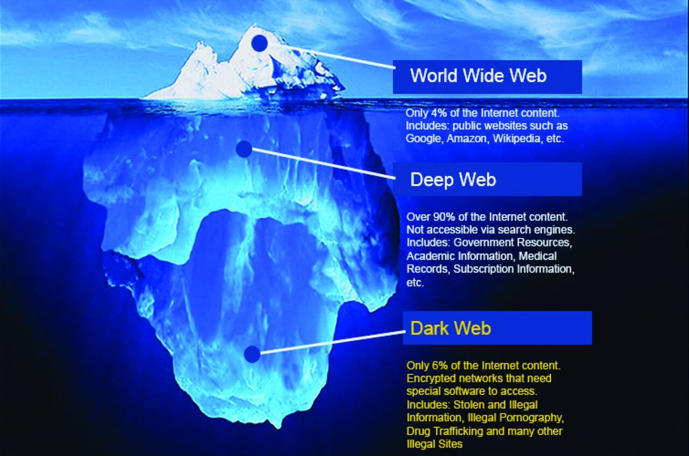

We are very glad to introduce Kevin Mitnick, upon whom our website is named. Kevin Mitnick, a black hat turned white hat hacker was responsible for various computer and communications-related crimes and had been arrested several times and spent more than 5 years in prison. He then turned into white hat hacker and he currently runs the security firm Mitnick Security Consulting, LLC. He is also the Chief Hacking Officer and part owner of the security awareness training company KnowBe4, as well as an active advisory board member at Zimperium, a firm that develops a mobile intrusion prevention system.
What is hacking?
Hacking literally means getting access to systems which we shouldn’t have access to.
Types of Hackers :
White hat –
Black hat –
Grey hat –
One who does illegal stuffs for personal benefits
Black hat –
Tries to make the world a better place to live in by securing systems
Grey hat –
Intermediate between white and black hat hackers. It means they do violate ethical standards but still have no intend like black hat hackers
What is Ethical Hacking?
Ethical Hacking sometimes called as Penetration Testing is an act of intruding/penetrating into system or networks to find out threats, vulnerabilities in those systems which a malicious attacker may find and exploit causing loss of data, financial loss or other major damage.
Unlike the world in 19th century, several laws are in practice to punish black hat hackers now-a-days. To explain with an incident, When Onel de guzman released the ILOVE YOU virus or LOVE worm for the first time in 2000 in philippines, it affected 50 million internet users around the world in 10 days. Since there were no laws in the Philippines against writing malware at the time, Onel de Guzman was released with all charges dropped by state prosecutors.
Click here to know more about hacking laws and punishments
Phases of Hacking:
- Information Gathering
- Scanning
- Gaining access
- Maintaining access
- Clearing Traces
Information Gathering:
Active: Directly interacting with target to gain info
Passive: Collecting info with the help of social media, public websites
Passive: Collecting info with the help of social media, public websites
Scanning :
Port scanning
Vulnerability scanning
Nwetwork mapping
Vulnerability scanning
Nwetwork mapping
Gaining access:
This phase is where an attacker breaks into the system/network using various tools or methods. After entering into a system, he has to increase his privilege to administrator level so he can install an application he needs or modify data or hide data
Maintainning access:
he wants to maintain or persist the connection in the background without the knowledge of the user. This can be done using Trojans, Rootkits or other malicious files. The aim is to maintain the access to the target until he finishes the tasks he planned to accomplish in that target.
Clearing accesss:
No thief wants to get caught. An intelligent hacker always clears all evidence so that in the later point of time, no one will find any traces leading to him. This involves modifying/corrupting/deleting the values of Logs, modifying registry values and uninstalling all applications he used and deleting all folders he created.
Why learn hacking?
To hack into system. Ofcourse not, learning hacking helps us to be alert.
- Ensure home/organisation is secure
- Secure our own system
- Job oppurtunities
- Increase awareness
Dark web:
The invisible part of the internet is called dark web.
The contents that we see while we browse is enabled through the world wide web, which is the top layer of the internet. Anyone in this world can get access to the sites here
Deep web The content of the deep web is hidden behind HTTP forms and includes many very common uses such as web mail, online banking, private or otherwise restricted access social-media pages and profiles, some web forums that require registration for viewing content, and services that users must pay for, and which are protected by paywalls, such as video on demand and some online magazines and newspapers.
Dark web can be accessed with the help of TOR browser. It is also called the onion router. The dark web refers to encrypted online content that is not indexed by conventional search engines. Sometimes, the dark web is also called the dark net. The dark web is a component of the deep web. The dark web helps people to maintain privacy and freely express their views.
Further References : SEE HERE
Dark web can be accessed with the help of TOR browser. It is also called the onion router. The dark web refers to encrypted online content that is not indexed by conventional search engines. Sometimes, the dark web is also called the dark net. The dark web is a component of the deep web. The dark web helps people to maintain privacy and freely express their views.
Further References : SEE HERE